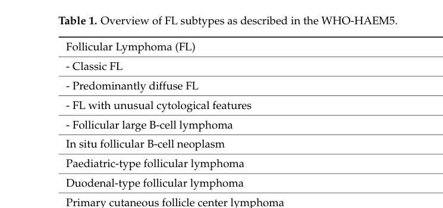

1. Disease Information
1.1 Concise overview
Follicular lymphoma is an indolent GC B‑cell lymphoproliferative disorder that commonly presents with diffuse lymphadenopathy and frequent bone marrow involvement and splenomegaly (jacobsen2022follicularlymphoma2023 pages 1-2). A defining biological feature in most cases is dysregulated anti‑apoptotic signaling driven by IGH::BCL2 rearrangement (t(14;18)), but FL is clinically and biologically heterogeneous, with a subset showing early progression, repeated relapse, or histologic transformation to diffuse large B‑cell lymphoma (DLBCL) (jacobsen2022follicularlymphoma2023 pages 1-2, kurz2023follicularlymphomain pages 2-4).
Direct abstract quote (definition/clinical): Jacobsen’s “2023 update on diagnosis and management” describes FL as “generally an indolent B cell lymphoproliferative disorder of transformed follicular center B cells” and notes it is characterized by “diffuse lymphadenopathy, bone marrow involvement, and splenomegaly” (jacobsen2022follicularlymphoma2023 pages 1-2).
1.2 Key identifiers (available in current evidence)
- MONDO: MONDO:0018906 (OpenTargets Search: follicular lymphoma)
- Other identifiers requested (ICD‑10/11, MeSH, OMIM, Orphanet): not retrieved in the current evidence set; would require additional ontology-specific queries beyond the papers/records gathered here.
1.3 Common synonyms / alternative names
- “Classic follicular lymphoma (cFL)” (WHO‑HAEM5 term for the predominant entity) (kurz2023follicularlymphomain pages 1-2)
- “Follicular large B‑cell lymphoma (FLBCL)” (WHO‑HAEM5 term corresponding to former FL grade 3B) (kurz2023follicularlymphomain pages 1-2)
1.4 Evidence source type
The synthesis here uses aggregated disease-level resources (WHO‑HAEM5 classification review; therapy reviews; registry/SEER analyses; meta-analyses) and clinical trial reports, rather than individual patient EHR data (nizamuddin2024bispecificantibodiesin pages 2-4, testa2024cartcelltherapy pages 1-2, kurz2023follicularlymphomain pages 1-2, odutola2020lifestyleandrisk pages 1-2, xie2022analysisandprediction pages 1-2).
2. Etiology
2.1 Disease causal factors (current understanding)
Multistep lymphomagenesis from GC B cells is a dominant model: early acquisition of t(14;18) and subsequent accumulation of cooperating lesions (particularly in chromatin/epigenetic regulators) in the GC context, with selection pressures from the tumor microenvironment (TME) (kurz2023follicularlymphomain pages 2-4, carreras2023thepathobiologyof pages 3-4).
A key concept from pathology literature is that t(14;18) alone is not sufficient: the t(14;18) can be detectable in healthy individuals, supporting the need for additional alterations for malignant FL (randall2020pathologyanddiagnosis pages 1-2).
2.2 Risk factors
2.2.1 Genetic susceptibility (population-level)
Within the retrieved evidence, we did not capture GWAS/ClinVar/ClinGen-specific loci; however, strong somatic genetic drivers are consistently reported (Section 4).
2.2.2 Environmental/occupational exposures
- Glyphosate exposure and FL subtype risk: An updated meta-analysis reported a subtype estimate for FL of meta‑RR 0.84 (95% CI 0.61–1.17) (odutola2020lifestyleandrisk pages 1-2).
(Note: this is subtype-specific and does not support increased FL risk in that synthesis; additional pesticide classes/solvents specific to FL were not extracted in the current evidence set.)
2.2.3 Lifestyle factors
A systematic review/meta-analysis focused on FL reported: - Alcohol intake: inverse association, meta‑RR 0.87 (95% CI 0.81–0.94) with dose–response (p‑trend reported) (odutola2020lifestyleandrisk pages 1-2). - Smoking (current): meta‑RR 1.11 (95% CI 0.92–1.35) (odutola2020lifestyleandrisk pages 1-2). - Hair dye use before 1980: meta‑RR 1.66 (95% CI 1.22–2.25); no association after 1980 (odutola2020lifestyleandrisk pages 1-2).
2.3 Protective factors
Evidence for a statistically protective association is present for alcohol intake in the FL-specific meta-analysis (meta‑RR < 1), though causality is uncertain in observational syntheses (odutola2020lifestyleandrisk pages 1-2).
2.4 Gene–environment interactions
No explicit gene–environment interaction results were retrieved in the current evidence set.
3. Phenotypes
3.1 Core clinical phenotypes (with HPO suggestions)
Clinical presentation (systemic FL): - Diffuse lymphadenopathy (HPO: HP:0002716 Lymphadenopathy) (jacobsen2022follicularlymphoma2023 pages 1-2) - Bone marrow involvement; cytopenias can occur (HPO: HP:0001875 Neutropenia, HP:0001903 Anemia, depending on cytopenia type) (jacobsen2022follicularlymphoma2023 pages 1-2) - Splenomegaly (HPO: HP:0001744 Splenomegaly) (jacobsen2022follicularlymphoma2023 pages 1-2) - “B symptoms” are uncommon without transformation (HPO: HP:0001945 Fever, HP:0004375 Night sweats, HP:0004322 Weight loss) (jacobsen2022follicularlymphoma2023 pages 1-2)
Transformation-associated phenotype (clinical suspicion): rapid lymph node growth, more systemic symptoms; transformation risk ~2%/year is cited in WHO‑HAEM5 review context (kurz2023follicularlymphomain pages 2-4).
3.2 Age of onset / course
- Typical diagnosis occurs in older adults; median age reported ~63–65 years (jacobsen2022follicularlymphoma2023 pages 1-2, randall2020pathologyanddiagnosis pages 1-2, odutola2020lifestyleandrisk pages 1-2).
- Disease course is often long/indolent, but relapsing and at risk of transformation (jacobsen2022follicularlymphoma2023 pages 1-2, kurz2023follicularlymphomain pages 2-4).
3.3 Pathology phenotype (with HPO suggestions)
- Follicular/nodular growth pattern composed of centrocytes/centroblasts (morphology feature; map to pathology descriptors rather than HPO in many KBs) (kurz2023follicularlymphomain pages 1-2).
3.4 Quality of life impact
QoL instruments were not captured in the current evidence set; however, chronic relapsing disease and treatment sequencing imply long-term burden (jacobsen2022follicularlymphoma2023 pages 1-2, russlergermain2024sequencingbispecificantibodies pages 1-2).
4. Genetic / Molecular Information
4.1 Hallmark lesions
IGH::BCL2 translocation (t(14;18)(q32;q21)) is the central hallmark in the majority of cases: - WHO‑HAEM5 review: cFL typically harbors t(14;18) in ~85% of cases (kurz2023follicularlymphomain pages 1-2). - Clinical review: BCL2 overexpression driven by t(14;18) present in ~85% (jacobsen2022follicularlymphoma2023 pages 1-2).
4.2 Recurrent somatic mutations (frequencies captured in evidence)
From a 2023 pathobiology review: - KMT2D: 80–90% - CREBBP: 33–70% - EZH2: 7–30% - Additional recurrent lesions include TNFRSF14, BCL6, RRAGC (carreras2023thepathobiologyof pages 3-4).
4.3 Epigenetic information
Epigenetic dysregulation is repeatedly emphasized through frequent alterations of chromatin regulators (KMT2D, CREBBP, EZH2) (jacobsen2022follicularlymphoma2023 pages 1-2, carreras2023thepathobiologyof pages 3-4). Mechanistic in vivo evidence shows cooperative effects of chromatin modifier perturbation on immune microenvironment states (cancemi2025singleagentandassociated pages 4-5).
4.4 Chromosomal abnormalities and subtype-associated genetics (WHO‑HAEM5)
WHO‑HAEM5 recognizes related subtypes beyond cFL; for example, a predominantly diffuse subtype is associated with absence of IGH::BCL2 fusion, frequent STAT6 mutations, and 1p36 deletion or TNFRSF14 mutation (kurz2023follicularlymphomain pages 1-2). Table evidence for the subtype schema is captured in Kurz et al. (kurz2023follicularlymphomain media dfd5fc5e).
4.5 Suggested GO and CL terms (mechanism-linked)
- GO (biological process):
- Regulation of apoptotic process (BCL2-driven survival)
- Chromatin organization / histone modification (KMT2D/CREBBP/EZH2)
- Germinal center formation / B‑cell activation
- CL (cell types):
- Germinal center B cell (central malignant population)
- T follicular helper cell and follicular dendritic cell as key microenvironmental partners (supported conceptually by microenvironment dependence noted in FL reviews) (russlergermain2024sequencingbispecificantibodies pages 1-2)
(These ontology suggestions are consistent with the mechanistic themes explicitly described in the retrieved reviews; they are not exhaustive.)
5. Environmental Information
5.1 Environmental / occupational factors
Evidence retrieved here is limited to a glyphosate meta-analysis subtype estimate for FL (meta‑RR 0.84, 95% CI 0.61–1.17) (odutola2020lifestyleandrisk pages 1-2). Broader pesticide class associations were not extracted specifically for FL subtype in the current evidence.
5.2 Lifestyle factors
See Section 2.2.3 for quantitative meta-analytic associations (odutola2020lifestyleandrisk pages 1-2).
5.3 Infectious agents
No infectious etiology evidence was retrieved in the current evidence set.
6. Mechanism / Pathophysiology
6.1 Causal chain (integrated)
1) Initiation: early acquisition of IGH::BCL2 translocation in B cells leading to BCL2 overexpression and survival advantage (jacobsen2022follicularlymphoma2023 pages 1-2, kurz2023follicularlymphomain pages 1-2). 2) GC evolution: accumulation of recurrent epigenetic/chromatin regulator mutations (KMT2D/CREBBP/EZH2) shaping transcriptional programs and differentiation states (carreras2023thepathobiologyof pages 3-4). 3) TME dependence: FL survival and progression are supported by immune microenvironment interactions (notably emphasized in T‑cell engager landscape reviews) (russlergermain2024sequencingbispecificantibodies pages 1-2). 4) Progression/relapse/transformation: clonal evolution over time contributes to relapse and risk of transformation to aggressive lymphoma, associated with inferior outcomes (kurz2023follicularlymphomain pages 2-4, carreras2023thepathobiologyof pages 3-4).
6.2 Recent mechanistic developments (2024)
- Longitudinal multi‑omics profiling: a 2024 report analyzed longitudinal biopsies and “confirmed recurrent mutations in genes encoding epigenetic regulators (CREBBP, KMT2D, EZH2, EP300)” and identified CREBBP/KMT2D as early events (cancemi2025singleagentandassociated pages 4-5).
- Epigenetic cooperation shaping immune evasion: a 2024 Nature Communications study reports that combined CREBBP/KMT2D haploinsufficiency in mouse models “confers an immune evasive microenvironment manifesting as CD8+ T-cell exhaustion and reduced infiltration” (cancemi2025singleagentandassociated pages 4-5).
7. Anatomical Structures Affected
7.1 Organ/tissue involvement (UBERON suggestions)
- Lymph nodes (UBERON: UBERON:0000029) (jacobsen2022follicularlymphoma2023 pages 1-2)
- Bone marrow (UBERON: UBERON:0002371) (jacobsen2022follicularlymphoma2023 pages 1-2)
- Spleen (UBERON: UBERON:0002106) (jacobsen2022follicularlymphoma2023 pages 1-2)
7.2 Cell level (CL suggestions)
- Germinal center B cell (primary malignant cell type) (jacobsen2022follicularlymphoma2023 pages 1-2, kurz2023follicularlymphomain pages 1-2)
- Tumor-infiltrating T cells (therapeutic target of CD3×CD20 bispecifics) (nizamuddin2024bispecificantibodiesin pages 2-4)
8. Temporal Development
- Onset pattern: typically insidious; older adult onset (median ~63–65 years) (randall2020pathologyanddiagnosis pages 1-2, odutola2020lifestyleandrisk pages 1-2).
- Course: prolonged/relapsing; transformation risk cited ~2% per year in WHO‑HAEM5 review context (kurz2023follicularlymphomain pages 2-4).
9. Inheritance and Population
9.1 Epidemiology (recent registry/meta-analytic data captured)
- US SEER-based 5‑year relative survival: 91.6% for FL (period analysis; SEER 2004–2018; prediction 2019–2023) (xie2022analysisandprediction pages 1-2).
- Pathology review survival estimate: 5‑year survival 88.4% (randall2020pathologyanddiagnosis pages 1-2).
- Sex ratio: slight male predominance reported (≈1.2:1) (odutola2020lifestyleandrisk pages 1-2).
- Incidence variation: substantial geographic variation; US age-standardized rates reported around ~3–4 per 100,000 in some periods vs ~0.2–0.3 per 100,000 in Korea; race/ethnicity gradients were reported within the US (odutola2020lifestyleandrisk pages 1-2).
9.2 Genetics and heritability
No inheritance mode (Mendelian) applies for typical FL as a somatic malignancy in the retrieved evidence.
10. Diagnostics
10.1 Core diagnostic approach
Diagnosis generally integrates morphology plus immunophenotype and, when needed, cytogenetics/molecular profiling (cancemi2025singleagentandassociated pages 4-5).
Immunophenotype features captured: - Positive: CD19, CD20, CD22, CD79a (nearly all cases), CD10 ~60%, BCL2 strongly expressed in most grade 1–2 tumors (cancemi2025singleagentandassociated pages 4-5). - Negative/typically absent: CD5, CD43, CD11c; CD23 variable/generally negative (cancemi2025singleagentandassociated pages 4-5).
Hallmark cytogenetics: - t(14;18)(q32;q21) leading to constitutive BCL2 overexpression is present in “most cases (80–90%)” in a pathology review (randall2020pathologyanddiagnosis pages 1-2).
10.2 Pathology and classification updates (WHO‑HAEM5)
WHO‑HAEM5 classifies the predominant entity as classic FL (cFL) and makes grading no longer mandatory; related subtypes include predominantly diffuse FL, unusual cytology FL, and FLBCL (former grade 3B) (kurz2023follicularlymphomain pages 1-2). A tabular summary of WHO‑HAEM5 subtypes is available in Kurz et al. Table 1 (image evidence) (kurz2023follicularlymphomain media dfd5fc5e).
11. Outcome / Prognosis
11.1 Transformation outcomes
Transformation to aggressive lymphoma is a key adverse event; transformed FL shows inferior survival compared with de novo DLBCL in registry comparisons (concept captured in disease reviews; transformation risk ~2%/year cited) (kurz2023follicularlymphomain pages 2-4).
11.2 Early progression as a prognostic discriminator
A review excerpt reports that among R‑CHOP–treated patients, 5‑year OS was markedly worse with early progression versus without early progression (50% vs 90%) (cancemi2025singleagentandassociated pages 4-5).
11.3 Survival benchmarks
- 5‑year relative survival for FL in US SEER period analysis: 91.6% (xie2022analysisandprediction pages 1-2).
- 5‑year survival estimate from pathology review: 88.4% (randall2020pathologyanddiagnosis pages 1-2).
12. Treatment
12.1 Standard frontline and early-stage options (context)
Clinical review notes frontline strategies include observation for asymptomatic advanced-stage patients, radiotherapy for limited-stage disease (curative in a subset), and anti‑CD20–based therapy alone or with chemotherapy (jacobsen2022follicularlymphoma2023 pages 9-9, jacobsen2022follicularlymphoma2023 pages 1-2).
12.2 Recent developments (2023–2024 prioritized): bispecific antibodies and CAR‑T
CD20×CD3 bispecific antibodies (off‑the‑shelf T‑cell engagers)
- Mosunetuzumab (GO29781): ORR 80%, CR 60%, median follow‑up 37 months; 36‑month PFS 43.2%, 36‑month OS 82.9%, median duration of response 35.9 months (nizamuddin2024bispecificantibodiesin pages 2-4).
- Epcoritamab (EPCORE NHL‑1): ORR 82%, CR 63%; follow‑up reported, with median duration of response ~15.4 months in the review excerpt (nizamuddin2024bispecificantibodiesin pages 2-4).
Expert opinion (sequencing): An ASH Hematology 2024 review states that, given emerging durability and feasibility, they “generally favor BsAbs before CAR T as the standard-of-care third-line treatment for the typical patient with R/R FL without concern for aggressive histologic transformation” (russlergermain2024sequencingbispecificantibodies pages 1-2).
CAR‑T cell therapy (anti‑CD19)
- Axicabtagene ciloleucel (axi‑cel), ZUMA‑5: ORR 94%, CR 79% after a single infusion; 3‑year follow‑up indicates durable remissions with median duration of response ~38.6 months and median PFS ~40.2 months (testa2024cartcelltherapy pages 1-2).
EZH2 inhibitor (epigenetic therapy)
- Tazemetostat (EZH2‑mutant R/R FL; Japan phase II follow‑up): ORR 70.6%; 24‑month PFS 72.1% and 36‑month PFS 64.1%; no unexpected grade ≥3 treatment-related AEs on long follow‑up (cao2025efficacyandsafety pages 12-12).
12.3 Treatment ontology suggestions
- MAXO (examples): anti‑CD20 monoclonal antibody therapy; chemoimmunotherapy; radiotherapy; CAR‑T cell therapy; bispecific antibody therapy; epigenetic therapy (EZH2 inhibition).
- CHEBI (examples): lenalidomide (immunomodulatory drug, target context); tazemetostat (EZH2 inhibitor) (jacobsen2022follicularlymphoma2023 pages 9-9, cao2025efficacyandsafety pages 12-12).
13. Prevention
No established primary prevention or population screening strategy for FL was retrieved in this evidence set. Risk-factor evidence exists from observational syntheses (e.g., alcohol intake associations, hair dye before 1980), but these are not actionable clinical prevention guidelines within the retrieved materials (odutola2020lifestyleandrisk pages 1-2).
14. Other Species / Natural Disease
Not directly retrieved in the current evidence set.
15. Model Organisms
Mechanistic model organism evidence supports GC-context initiation and epigenetic cooperation: - A 2024 Nature Communications study used mouse genetics to show combined CREBBP/KMT2D haploinsufficiency accelerates lymphoma phenotypes and shapes immune evasion (cancemi2025singleagentandassociated pages 4-5).
Evidence summary table
Table (click to expand)
| Domain | Key points | Key sources | URLs |
|---|---|---|---|
| Classification | WHO-HAEM5: most FL with follicular growth are classic FL (cFL) (~85%), composed of centrocytes/centroblasts; grading of cFL is no longer mandatory; FLBCL corresponds to prior grade 3B (kurz2023follicularlymphomain pages 1-2) | Kurz 2023 | https://doi.org/10.3390/cancers15030785 |
| Genetics | Hallmark lesion: t(14;18)(q32;q21)/IGH::BCL2 in ~85% of cFL/manifest FL; considered an initiating event (kurz2023follicularlymphomain pages 2-4, kurz2023follicularlymphomain pages 1-2) | Kurz 2023 | https://doi.org/10.3390/cancers15030785 |
| Genetics | Recurrent mutation frequencies reported in FL: KMT2D 80–90%, CREBBP 33–70%, EZH2 7–30%; other recurrent lesions include TNFRSF14, BCL6, RRAGC (carreras2023thepathobiologyof pages 3-4) | Carreras 2023 | https://doi.org/10.3960/jslrt.23014 |
| Clinical | Typical presentation: diffuse lymphadenopathy, frequent bone marrow involvement and splenomegaly; extranodal involvement less common; cytopenias relatively common, B symptoms uncommon without transformation (jacobsen2022follicularlymphoma2023 pages 1-2) | Jacobsen 2022 | https://doi.org/10.1002/ajh.26737 |
| Epidemiology/Outcome | FL is the second most common lymphoma in the US/Western Europe; median diagnosis age ~65 years; rituximab-era registry data cited 10-year OS ~80% overall (age-stratified ~92% to 64%); transformation risk about 2%/year (jacobsen2022follicularlymphoma2023 pages 1-2, kurz2023follicularlymphomain pages 2-4) | Jacobsen 2022; Kurz 2023 | https://doi.org/10.1002/ajh.26737; https://doi.org/10.3390/cancers15030785 |
| Treatment | Mosunetuzumab (GO29781): ORR 80%, CR 60%; median follow-up 37 months; median PFS 24 months; 36-month PFS 43.2%; median OS not reached; 36-month OS 82.9%; median DOR 35.9 months (nizamuddin2024bispecificantibodiesin pages 2-4) | Nizamuddin 2024 | https://doi.org/10.3324/haematol.2024.285245 |
| Treatment | Epcoritamab (EPCORE NHL-1): ORR 82%, CR 63%; median follow-up 27 months; median DOR about 15.4 months (nizamuddin2024bispecificantibodiesin pages 2-4) | Nizamuddin 2024 | https://doi.org/10.3324/haematol.2024.285245 |
| Treatment | Axicabtagene ciloleucel (axi-cel), ZUMA-5: ORR 94%, CR 79% after single infusion; updated ~40.5-month follow-up with median DOR 38.6 months, median PFS 40.2 months, and 62% of CRs maintained at 36 months (testa2024cartcelltherapy pages 1-2) | Testa 2024 | https://doi.org/10.4084/mjhid.2024.012 |
| Treatment | Tazemetostat in Japanese EZH2-mutant R/R FL: ORR 70.6%; 24-month PFS 72.1%; 36-month PFS 64.1%; long-term median follow-up 35.0 months; no unexpected grade ≥3 treatment-related AEs in follow-up (cao2025efficacyandsafety pages 12-12) | Izutsu 2024 | https://doi.org/10.1007/s12185-024-03834-9 |
Table: This table condenses the most relevant classification, molecular, clinical, epidemiologic, and 2023–2024 therapy outcome findings for follicular lymphoma from the gathered evidence. It is useful as a quick-reference summary for building a disease knowledge-base entry.
Key WHO‑HAEM5 classification visual evidence
Kurz et al. Table 1 (WHO‑HAEM5 subtype overview, including optional grading of cFL and renamed entities) is available as an extracted image (kurz2023follicularlymphomain media dfd5fc5e).
Limitations of the current evidence set
- Formal cross-ontology identifiers (MeSH, ICD‑10/11, Orphanet, OMIM) were not retrieved in the current tool calls.
- Some requested content areas (explicit gene–environment interaction studies; infectious triggers; QoL instrument statistics; comprehensive differential diagnosis tables) were not captured in the current extracted excerpts.
- PMID-level citation mapping is incomplete in these excerpts; several sources provide DOIs/URLs, but PMIDs were not consistently available in the retrieved text segments.
References
-
(OpenTargets Search: follicular lymphoma): Open Targets Query (follicular lymphoma, 42 results). Buniello, A. et al. (2025). Open Targets Platform: facilitating therapeutic hypotheses building in drug discovery. Nucleic Acids Research.
-
(jacobsen2022follicularlymphoma2023 pages 1-2): Eric Jacobsen. Follicular lymphoma: 2023 update on diagnosis and management. American Journal of Hematology, 97:1638-1651, Oct 2022. URL: https://doi.org/10.1002/ajh.26737, doi:10.1002/ajh.26737. This article has 163 citations and is from a domain leading peer-reviewed journal.
-
(kurz2023follicularlymphomain pages 1-2): Katrin S. Kurz, Sabrina Kalmbach, Michaela Ott, Annette M. Staiger, German Ott, and Heike Horn. Follicular lymphoma in the 5th edition of the who-classification of haematolymphoid neoplasms—updated classification and new biological data. Cancers, 15:785, Jan 2023. URL: https://doi.org/10.3390/cancers15030785, doi:10.3390/cancers15030785. This article has 55 citations.
-
(kurz2023follicularlymphomain pages 2-4): Katrin S. Kurz, Sabrina Kalmbach, Michaela Ott, Annette M. Staiger, German Ott, and Heike Horn. Follicular lymphoma in the 5th edition of the who-classification of haematolymphoid neoplasms—updated classification and new biological data. Cancers, 15:785, Jan 2023. URL: https://doi.org/10.3390/cancers15030785, doi:10.3390/cancers15030785. This article has 55 citations.
-
(nizamuddin2024bispecificantibodiesin pages 2-4): Imran A. Nizamuddin and Nancy L. Bartlett. Bispecific antibodies in follicular lymphoma. Haematologica, 110:1472-1482, Oct 2024. URL: https://doi.org/10.3324/haematol.2024.285245, doi:10.3324/haematol.2024.285245. This article has 17 citations.
-
(testa2024cartcelltherapy pages 1-2): Ugo Testa, Francesco D'Alò, Elvira Pelosi, Germana Castelli, and Giuseppe Leone. Car-t cell therapy for follicular lymphomas. Mediterranean Journal of Hematology and Infectious Diseases, 16:e2024012, Jan 2024. URL: https://doi.org/10.4084/mjhid.2024.012, doi:10.4084/mjhid.2024.012. This article has 12 citations.
-
(odutola2020lifestyleandrisk pages 1-2): Michael K. Odutola, Eriobu Nnakelu, Graham G. Giles, Marina T. van Leeuwen, and Claire M. Vajdic. Lifestyle and risk of follicular lymphoma: a systematic review and meta-analysis of observational studies. Cancer Causes & Control, 31:979-1000, Aug 2020. URL: https://doi.org/10.1007/s10552-020-01342-9, doi:10.1007/s10552-020-01342-9. This article has 12 citations and is from a peer-reviewed journal.
-
(xie2022analysisandprediction pages 1-2): Shuping Xie, Zhongjie Yu, Aozi Feng, Shuai Zheng, Yunmei Li, You Zeng, and J. Lyu. Analysis and prediction of relative survival trends in patients with non-hodgkin lymphoma in the united states using a model-based period analysis method. Frontiers in Oncology, Sep 2022. URL: https://doi.org/10.3389/fonc.2022.942122, doi:10.3389/fonc.2022.942122. This article has 34 citations.
-
(carreras2023thepathobiologyof pages 3-4): Joaquim Carreras. The pathobiology of follicular lymphoma. Journal of Clinical and Experimental Hematopathology : JCEH, 63:152-163, Jul 2023. URL: https://doi.org/10.3960/jslrt.23014, doi:10.3960/jslrt.23014. This article has 17 citations.
-
(randall2020pathologyanddiagnosis pages 1-2): Cara Randall and Yuri Fedoriw. Pathology and diagnosis of follicular lymphoma and related entities. Jan 2020. URL: https://doi.org/10.1016/j.pathol.2019.09.010, doi:10.1016/j.pathol.2019.09.010. This article has 34 citations and is from a peer-reviewed journal.
-
(russlergermain2024sequencingbispecificantibodies pages 1-2): David A. Russler-Germain and Nancy L. Bartlett. Sequencing bispecific antibodies and car t cells for fl. Hematology, 2024:310-317, Dec 2024. URL: https://doi.org/10.1182/hematology.2024000667, doi:10.1182/hematology.2024000667. This article has 8 citations and is from a peer-reviewed journal.
-
(cancemi2025singleagentandassociated pages 4-5): Gabriella Cancemi, Chiara Campo, Santino Caserta, Iolanda Rizzotti, and Donato Mannina. Single-agent and associated therapies with monoclonal antibodies: what about follicular lymphoma? Cancers, 17:1602, May 2025. URL: https://doi.org/10.3390/cancers17101602, doi:10.3390/cancers17101602. This article has 11 citations.
-
(kurz2023follicularlymphomain media dfd5fc5e): Katrin S. Kurz, Sabrina Kalmbach, Michaela Ott, Annette M. Staiger, German Ott, and Heike Horn. Follicular lymphoma in the 5th edition of the who-classification of haematolymphoid neoplasms—updated classification and new biological data. Cancers, 15:785, Jan 2023. URL: https://doi.org/10.3390/cancers15030785, doi:10.3390/cancers15030785. This article has 55 citations.
-
(jacobsen2022follicularlymphoma2023 pages 9-9): Eric Jacobsen. Follicular lymphoma: 2023 update on diagnosis and management. American Journal of Hematology, 97:1638-1651, Oct 2022. URL: https://doi.org/10.1002/ajh.26737, doi:10.1002/ajh.26737. This article has 163 citations and is from a domain leading peer-reviewed journal.
-
(cao2025efficacyandsafety pages 12-12): Junning Cao, Guangliang Chen, Lihua Qiu, Liling Zhang, Ming Jiang, Ying Cheng, Qiaohua Zhang, Lihong Liu, Ping Li, Yuerong Shuang, Huaqing Wang, Hongwei Xue, Huijing Wu, Meifang Zheng, Keshu Zhou, Zhiming Li, Hongmei Jing, Wei Yang, Zunmin Zhu, Wenyu Li, Jiaxuan Wangwu, Heyu Huang, Qiantao Jia, Dongmei Chen, Songhua Fan, M. Ming Shi, and Weiguo Su. Efficacy and safety of tazemetostat, an ezh2 inhibitor, in chinese patients with relapsed/refractory follicular lymphoma: a multicentre, single-arm, phase 2 study. Sep 2025. URL: https://doi.org/10.1016/j.eclinm.2025.103399, doi:10.1016/j.eclinm.2025.103399. This article has 5 citations and is from a peer-reviewed journal.
Artifacts
- Edison artifact artifact-00
